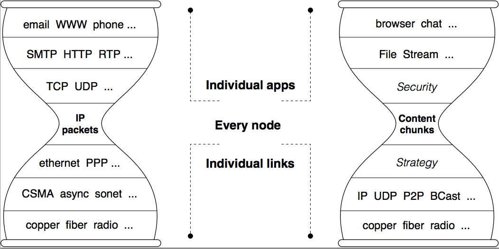

2017/08/24 - (Paper) NDN.JS: A JavaScript Client Library for Named Data Networking¶
Wentao Shang∗, Jeff Thompson‡ , Meki Cherkaoui∗, Jeff Burke† and Lixia Zhang∗
∗Department of Computer Science, UCLA. {wentao,meki,lixia}@cs.ucla.edu.
‡Los Angeles, California. jeff@thefirst.org.
†Center for Research in Engineering, Media and Performance, UCLA. jburke@ucla.edu
Proceedings of IEEE INFOCOMM 2013 NOMEN Workshop, April 2013.
Full Content : Link
Introduction¶
{kind=link}
Named Data Networking (NDN) is a recently proposed networking architecture that shifts the “thin waist” of the Internet from IP’s host-centric model to a data-centric model, together with two important consequences :
1. Data are named by applications, and the network routes directly on these data names, rather than host address.
2. Each name is associated with a cryptograhpic key, which is used to secure data directly.
NDN.JS provides a JavaScript API that can be used to embed NDN data access and publishing at the client-side of existing Web applications. It requires only the addition of WebSockets support in NDN routers, which is currently achieved by a simple JavaScript-based proxy.
One of the first tools built with NDN.JS was a Mozilla Firefox Add-On, which enables Firefox to process URIs in the NDN scheme (e.g. “ndn:/foo/bar/file.html”) and brings NDN features “up to the user.
System Design¶
A. Design Goals¶
- Pure ( and Compatible ) JavaScript : In order to run on the widest number of browsers and machine types.
- Developer-friendly API
- Content Signing and Verification : The library should support content signing and verifications using RSA signatures and SHA-256 hashes.
- Lightweight: The library should be as simple and low-overhead as possible because it is intended to be used in browsers.
- CCNx Compatibility
B. Use Cases¶
- Web content fetching and publishing : Web users can use NDN.JS to communicate with CCN routers to fetch and/or publish content conveniently using the browser.
- Peer-to-peer chatting and file sharing : NDN.JS allows Web users to act as both content producer and consumer, which is expected to enable NDN-based P2P communication among Web users.
C. Architecture¶
NDN.JS includes most of the core functionality of the CCNx client libraries, include data fetching and publishing, content signing and verification, exclusion filters, and binary name storage.
D. WebSockets Transport Service¶
Conventional HTTP-based Web implementations, such as synchronous GET/POST or asynchronous XMLHttpRequest, are not suited for NDN communications due to the lack of “server push” capability.
The WebSocket protocol ,on the other hand, provides a generic JavaScript interface to enable full-duplex TCP connections to any remote host.
NDN.JS adopts WebSocket as the default transport for NDN packet exchange.
Since current CCN routers do not support the WebSocket protocol, we have developed a WebSocket proxy that accepts WebSocket connections from NDN.JS instances and passes the packets over TCP/UDP to CCN routers.
The WebSocket proxy is implemented in JavaScript code running on Node.js.
E. Applications Programing Interface¶
The programing interface in NDN.JS is designed to be consistent with PyCCN [1] . The library is first initialized with the hostname or IP address of a WebSocket proxy or other transport provider.
After connection to the NDN network, the top leven “NDN” class provides two important methods:
- expressInterest : fetch the named data from CCN routers.
- registerPrefix : publish local content by registering the content name to CCN routers.
These two methods are asynchronous, which is appropriate for NDN Interest/Data exchange.
My Summary¶
I choose this paper because of the Web ChronoChat Application [2] powered by NDN.JS. So I want to know how to build my own chatroom over NDN. NDN.JS is a tool I may use when I implement the chatroom.
This paper shows that we can develop our web application by using JavaScript library to realize NDN fetch/publish content easily. Use proxy server to support WebSocket protocol is a temporary solution until CCN routers(or NDN routers) could support WebSocket.
I think WebSocket is a good solution for full-duplex TCP connections because NDN could not do “server push”. I guess more ndn web applications would rely on WebSocket full-duplex connection.
Reference¶
| [1] | : PyCCN : https://github.com/named-data/PyCCN |
| [2] | : Web ChronoChat : http://named-data.net/apps/live/chat/ |